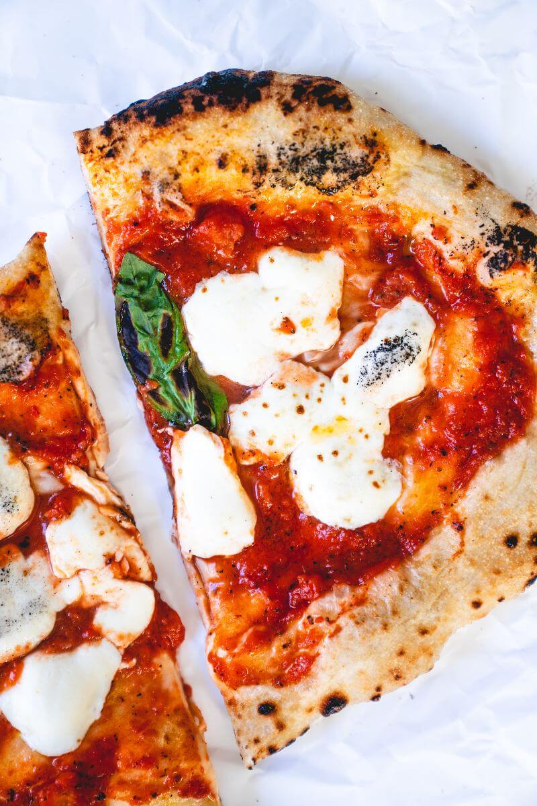

Neopolitan Style Pizza Recipe

Straight from the heart of Naples!
You know in the movie The Matrix when Neo is allowed to pick the blue and red pill,
a choice between blissful ignorance or truth? Eating pizza in Naples, the place where
pizza was invented, is like choosing the red pill.
Once you've tasted Neapolitan pizza,
you'll never go back. Then you'll spend the rest of your life trying to recreate it at
home! Luckily, we did that for you. Here are all our tips and tricks for the best homemade
Neapolitan pizza, so you can enjoy it for a lifetime!
Ingredients
- 1 ball of homemade pizza dough
- 1/3 cup of pizza sauce
- 3 ounces of fresh mozzarella
- Kosher salt
- 2 basil leaves
- Semolina Flour or cornmeal
Instructions
- Place a pizza stone in the oven and preheat to 500F, or preheat your pizza oven
if you have one
- Tear the mozzarella into 1/4 inch thick pieces
- When the oven is hot, stretch the dough into a thin circle
- Dust a pizza peel with Semolina or cornmeal & carefully place the dough on top
- Spread the pizza sauce onto the dough with the back of a ladel and top with the torn mozzarella
- Season with Kosher salt
- Transfer the pizza to the pizza stone. bake until the crust is starting to char, and
the cheese is melted but not seperating. Around 7 mins for a regular oven, or 1 min for a pizza oven
- Top with the basil and serve immediately